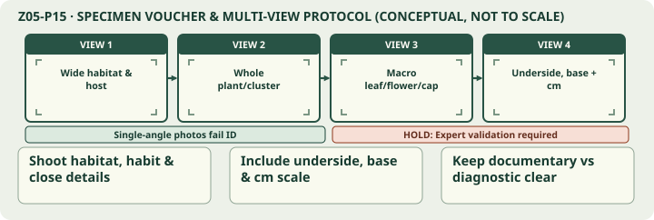

Z05-P15 · Wild foods and poisonous lookalikes · New manuscript
Multi-View Diagnostic Photography and Provenance Standards
Capture scientifically usable multi-view plant and fungal photographs with scale, locality, and rights documentation for expert review.
When it applies · Documenting field specimens cleanly for botanist or mycologist evaluation.
Equipment · Camera, matte metric scale card, notebook, GPS.

Actions
- Capture a matched multi-view series of the exact same individual specimen: (1) wide habitat context, (2) full plant or fruiting cluster, (3) perpendicular macro of diagnostic leaves/flowers/cap, and (4) underside/gills/stem-base or fruit cross-section.[B02, B05, B20]
- Place a readable metric scale bar in frame on close-ups and record exact date, county, substrate/host tree, elevation/habitat, photographer credit, and copyright license.[B02, B05]
- Keep documentary habitat photos strictly distinct from expert-validated diagnostic evidence, and never fabricate or mislabel generated illustrations as real photographs.[B02, B24]
Failure recognition · Submitting a single top-down phone snapshot without scale, underside, or stem base prevents experts from confirming or excluding lethal lookalikes.[B02, B05]
Verify · All four matched views, metric scale, substrate/locality notes, and rights metadata are archived together.[B02, B05]
Stop or change course · Stop relying on incomplete single-angle photos or uncredited internet images for any identification decision.[B02, B24]
Evidence and editorial notes
- B02 · Bell Museum (UMN) · Bell Museum Specimen Collections Portal (Current web edition)
- Section: Curated herbarium and fungarium voucher specimen standards · Conditions: Corroborating species traits against documented physical vouchers
Support: Curated herbarium and fungarium vouchers link accepted scientific names, collection locality, habitat, and morphology to verifiable specimens.
Limitations: Image-search labels and crowd-sourced guesses cannot substitute for vouchered keys and qualified taxonomic review. · Conflicting evidence: None noted.
Editorial note: Core P19-A voucher discipline. · Specialist reviewer: Herbarium / fungarium curator
Primary source · checked 2026-11-25 - B05 · MyCoPortal · North American Fungal Voucher Collections Portal (Current web edition)
- Section: Separate fungal voucher collections and microscopic/macro traits · Conditions: Documenting macrofungi across North American collections
Support: Fungal taxonomy requires distinct anatomical schemas (cap, gills/pores/teeth, attachment, ring, volva, spore print, substrate, and often microscopy).
Limitations: Fungal species complexes frequently overlap macroscopically; photos alone cannot confirm edibility. · Conflicting evidence: None noted.
Editorial note: Keeps botanical and fungal schemas separate. · Specialist reviewer: Qualified mycologist
Primary source · checked 2026-11-25
Current assessment · A04-B05 (2026-11-25) · Open: support partial or missing (A04): Records can supply vouchers. No universal schema covers all fungi. Need taxon-specific monograph, angle and microscopy requirements. Limits: Specialist review PENDING (Qualified mycologist); publication HOLD. All release decisions pending. - B20 · USDA Forest Service · Celebrating Wildflowers: Plant Identification and Conservation (Current web edition)
- Section: Botanical morphology terminology and multi-character keys · Conditions: Observing leaf venation, margins, flower symmetry, and fruit anatomy
Support: Accurate plant identification requires confirming multiple independent morphological characters at the observed life stage.
Limitations: Missing flowers, fruit, or underground parts require stopping identification rather than guessing. · Conflicting evidence: None noted.
Editorial note: Enforces multi-feature identification standard. · Specialist reviewer: Plant taxonomist
Primary source · checked 2026-11-25 - B24 · National Capital Poison Center · Mushroom poisoning: prevention and response (Current reference)
- Section: Prevention tips and what to do after ingestion · Conditions: Wild mushroom recognition and suspected ingestion
Support: Lookalikes can fool observers. Avoid eating wild fungi on unverified identification and seek poison-centre advice promptly after suspected ingestion.
Limitations: Reject folk tests and generated-image clearance as an editorial restriction. Preparation cannot substitute for poison risk or identification review. · Conflicting evidence: Conditions are recorded in the A03 audit.
Editorial note: Enforces Z05 fail-closed edibility rule. · Specialist reviewer: Botanist, mycologist, and clinical toxicologist
Primary source · checked 2026-11-25
Source lineage · New manuscript (Z05 P19-C imaging standards) · Classification · New manuscript.